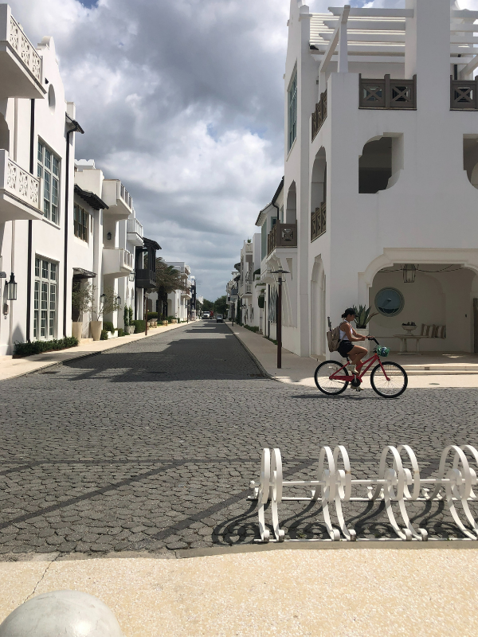

Weekend Trip - Washington D.C. & Old Town AlexandriaJay B.Dec. 5, 2025

This is a captionInformationJump to Itinerary
Reading Deadline
It is recommended to read this itinerary at least 2 months before the trip, and up to 3 months before the trip.
This recommendation is based on the fact that certain activities at this destination tend to book up quickly and it isn't advised to wait until the last minute.
When to Go
The best time to plan a visit to D.C. for sight-seeing is September-October, after tourist season has died down, hotel rates start to fall, and the weather is still preferable.
Since this itinerary is designed to be executed on a weekend, consider taking a Friday in September or October off and heading to D.C. and Old Town Alexandria for the weekend.
If you are going for the Cherry Blossom Festival, you'd want to go late March or early April. Make sure you look up the specific dates for the festival. Hotel rates will be much higher during this time.
Peak tourist season in Washington, D.C., is generally Spring (late March-May) for the Cherry Blossoms and festivals, and Summer (June-August) for warm weather and outdoor events, leading to large crowds and higher prices during both periods, though Fall (Sept-Oct) offers nice weather with fewer people.
Beware of school field trips if you decide to go in the Spring.
Budget
As of Dec. 2025, the estimated minimum cost to execute this itinerary is $2,500. If you have more than that, consider staying at a better/closer hotel, or staying more days.
The estimated minimum budget assumes there are two travelers. If you are a solo traveler, deduct the fixed expenses (i.e. expenses not reliant on the number of people like hotel, gas, and parking expenses), divide that number by two, then add back the hotel, gas, and parking expenses. That is your new estimated minimum budget.
Maximum Distance
This itinerary assumes the travelers are within at most 6 hours of the destination.
Week Days
This itinerary's activities are assumed to happen on a Friday, Saturday, and Sunday.
Activities & Excursions
This itinerary has scheduled in the following activities (see their scheduled times):
skydiving
ice-skating
hells kitchen
The link below goes to a post on all the activities you can do at this destination.
It might be important to mention the fact that the monuments will be viewed at night for this itinerary. Before you are completely against the idea of seeing monuments at night, I'd like to bring it to your attention that you might enjoy it more than the day time. I personally prefer seeing the monuments at night. Seeing them lit up behind a dark sky adds to the dramatic effect. Look up images on Google.
Due to the fact you will be in D.C. until 10:00 PM, it's advised not to do this itinerary alone.
What to Book
It's recommended to book the following before the trip:
Travel Methods
This itinerary assumes the travelers will use their car to drive to the destination and back home.
This itinerary assumes the travelers will use the metro system while at the travel destination.
How to use the D.C. Metro
Saving Time
This itinerary took 12 hours to plan, so that is how much time you are saving yourself.
ItineraryJump to Information
Before the Trip: Book your hotel, activities, taxis, and more.
3:30 PM Arrive in Old Town Alexandria
121 N Fairfax St, Alexandria, VA 22314
King St. is the street you want to go to. The address given is for Carlyle House Historic Park, which is right beside King St. Drive there and find parking as close to King St. as you can.https://visitalexandria.com/old-town/ $50 budgeted in for gas (fixed expense) 3:30 - 4:00 Find parking This itinerary has planned in 30 minutes for you to find parking so you don't feel rushed. Parking should be plentiful unless there's a special event. Expect to walk a few blocks to get to King St.You will have to pay. Street meters generally costing $1.25 to $3 per hour, while city garages offer rates starting around $10-$20 for several hours or daily. I recommend finding a 3-hour metered parking spot on the street. If you can't find a 3-hour spot, 2-hours will work, but you might feel rushed.There are parking garages as well, but be sure to read reviews. Some garages, like Some garages, like Alfred Street Parking Garage have scary-bad reviews, so you probably don't want to park there. $10 budgeted in for parking (fixed expense) $3/hr * 3 hrs = $9 + $0.54 (6% tax) = $9.54, rounded up to $10 4:00 - 7:00 Enjoy Old Town & get dinnerI'd spend the first hour (4:00 PM - 5:00 PM) just exploring and taking photos, and start thinking about where you might want to get dinner. I'd start making your way to dinner around 5:00 PM and finish eating by 6:30 PM.Depending on how far away you parked from King St, I'd start making your way back to your car and be there by 7:00 PM, or by the time your parking runs out.Dinner Recommendations: Urbano 116 (Mexican - $20-$30); Two Nineteen Restaurant (American - $20-$30); Mia's Italian Kitchen (Italian - $30-$50). $80 budgeted in for dinner (variable expense - budget is for 2 people ($40 each person)) $40 budget * 2 people = $80 7:00 - 7:40 Drive to your hotel in Vienna, VA 15.2 miles / 24.5 kilometers from Old Town Alexandria Courtyard by Marriott Dunn Loring Fairfax
2722 Gallows Rd, Vienna, VA 22180
Hotel's Website +1 703-573-9555Check-in: 4:00 PM - Minimum Age to Check In 21Check-out: 12:00 PM $350 budgeted in for hotel (fixed expense) Cost Breakdown: $100/night x 2 nights = $200 + $12 (6% sales tax) + $100 (security deposit - will be refunded) = $312 | On-Site Parking: $10/day x 2 days = $20 | $312 + $20 = $332 (round up to $350) Book it - reserve this before your trip. 7:40 - 8:00 PM Arrive @ hotel, check-in, & get settledMake note of whether the hotel has a microwave and fridge because next you will go buy breakfast for tomorrow.Tomorrow you will be leaving before hotel breakfast is served. 8:00 - 8:15 PM Walk to the Dunn Loring metro station 0.3 mile walk / 0.5 kilometer walk from the hotel Dunn Loring-Merrifield Metro Station
2700 Gallows Rd, Vienna, VA 22180 (Dunn Loring metro station)
8:15 - 8:30 PM Get your metro card (SmarTrip card)Go to the vending machine (in the Dunn Loring station, it is on the wall to the left when you walk in) and get a new card and add funds. Go ahead and add $20 to each card ($40 for two people), you will use the metro a lot tomorrow, and if you run out you can add more. Funds don't expire, so you can use funds next time.Make sure you read this about metro station vending machines. $44 budgeted in (variable expense - budget is for two people ($22 each)) Price Breakdown: $2 for new metro card + $20 in fare money * 2 people = $44 8:30 - 8:45 PM Walk to Harris Teeter 0.3 mile walk / 0.5 kilometer walk from the Dunn Loring metro station Harris Teeter
2675 Avenir Pl, Vienna, VA 22180
8:45 - 9:05 PM Shop @ Harris TeeterBuy non-perishable, no-cook breakfast to take with you on your trip.You will leave the hotel before breakfast is make on the day you go to D.C., so you need to have something to eat before you go.In D.C., eating is not allowed on the metro, and you are leaving very early in the morning (~5:40 AM); so buy something you don't have to prep and can eat quickly.Recommendations: Canned fruit / fruit cups / fresh fruit (like peaches, mandarin oranges); protein bars (something high-fiber, high-protein); Greek yogurt cups + plastic spoons, if the hotel has a fridge; pre-boiled eggs, if the hotel has a fridge; etc. $30 budgeted in for breakfast (variable expense - budget is for 2 people ($15 each)) 9:05 - 9:10 PM Walk back to the hotel 0.1 mile walk / 0.2 kilometer walk from Harris Teeter Courtyard by Marriott Dunn Loring Fairfax
2722 Gallows Rd, Vienna, VA 22180
9:10 - 9:40 PM Prepare for tomorrowYou will need to leave the hotel by 5:40 AM to the metro station and get there by 5:55 AM and wait to board the first Orange line train towards New Carrollton, which should run between 6:00 - 6:04 AM. The station opens 10 minutes before the first train, so the station opens 5:50 AM on weekends (first trains start at 6AM) and 4:50 AM Mon-Fri (first trains come at 5AM).How to Use the D.C. Metro Make sure you know how to ride the metro. You will walk to the same station you got your metro card from, approach the line of gates to your right, scan the metro card to enter down into the metro station, and wait for the metro train. There will be two sides for trains going different directions. The Orange line train going towards New Carrollton should be on the right side when you take the escalator down. If the hotel has a printer, I highly recommend printing the D.C. metro system map out, especially if you aren't familiar with metros and/or the D.C. metro system.Here is a link to the D.C. metro system map Make sure to read over tomorrow's *long* itinerary so you get familiar with it. Review the materials below:How to Use the D.C. MetroD.C. Metro RulesFrom the website: You cannot eat or drink on the DC Metro, as it is against the rules to eat, drink, smoke, or litter on Metro vehicles or in stations. Violating this rule can result in citations or arrest by the Metro Transit Police. The purpose of the rule is to keep the vehicles and stations clean and free of pests, which helps maintain a pest-free system.D.C. Metro MapU.S. Capitol - Read before you visitLibrary of Congress - Read before you visitNational Archives - Read before you visitNight Tour - Read before you visit 9:40 PM Go to bed
Day 2: Washington D.C.
5:00 - 5:35 AM Wake up, get ready, eat a quick breakfast 5:35 - 5:50 AM Walk to the metro station 0.3 miles Dunn Loring - Merrifield Metro Station
2700 Gallows Rd, Vienna, VA 22180
(202) 637-7000 The station opens 10 minutes before the first train, so 5:50 AM on weekends and 4:50 AM M-F. Prepare to get on the very first Orange line train towards New Carrollton (should be the Orange Line train on the right side when you walk down the stairs). It should run at 6:00-6:04 AM.Metro Map 5:50 - 6:05 AM Wait for the 1st Orange line train towards New CarrolltonMetro Map 6:05 - 7:05 AM Metro to Capitol South metro station Get off at Capitol South metro station (the 16th stop)Metro Map 7:05 - 7:40 AM Walk to the Ulysses S. Grant memorial 0.7 miles Ulysses S. Grant memorial Located west of the Capitol building. Here is an article about the Ulysses S. Grant memorial 7:40 - 8:00 AM Enjoy the Ulysses S. Grant memorial Photo Op: Snap a shot of the U.S. Capitol building across the Fun fact: The Ulysses S. Grant memorial is the largest equestrian monument in the United States, according to the website below...Here is an article about the Ulysses S. Grant memorial 8:00 - 8:35 AM Walk to the U.S. Capitol Visitor Center 0.7 miles (via Constitution Ave. NW) The U.S. Capitol Visitor Center
1st St SE, Washington, DC 20515
https://www.visitthecapitol.gov/ (202) 226-8000 The Capitol Visitor Center is located on the east side of the U.S. Capitol building, underneath the East Front plaza. It is the main entrance for visitors and serves as the starting point for tours of the Capitol. Leave 10-20 minutes to go through security. 8:35 - 9:00 AM Arrive and prepare for your tour Review prohibited items below. $4 budgeted in for 2 people $2/person to reserve ticket x 2 people